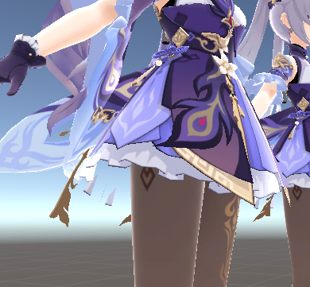
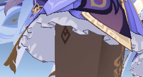
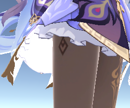
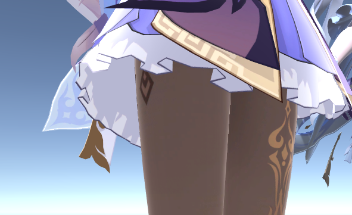
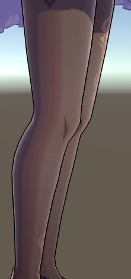
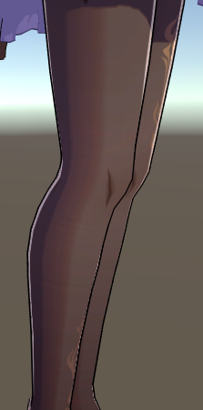

边缘光的实现方法中，最传统的应该是菲涅尔边缘光，在博客那篇PBR入门里也讲了一些菲涅尔的原理。
菲涅尔边缘光
实现方式很简单，就是依靠视线方向和模型法线的点积，不用说太多。
1 | float VoN = dot(viewDir, worldNormal); |
下面讲一下遇到的一些问题~
在shader中我没有开启背面剔除。因为一些开启后一些面片会因为法线方向背对摄像机方向从而遭到剔除。

使用cull off后裙子才能完整。

但是这部分没有被剔除的面片在菲涅尔现象的实现中会带来一些问题。众所周知，实现菲涅尔效果时我们一般采取菲涅尔方程的Fresnel-Schlick近似：
$x$是视线和法线的点积。背面剔除生效时，$x$的值被卡在[0,1]之中，我们不需要考虑特殊情况。但是由于我们使用了cull off命令，我们就需要考虑那些点积结果为负的特殊值了。
从菲涅尔方程的Fresnel-Schlick近似中不难看出当$x$小于0时，方程式的值会大于1。这就意味着如果我们不进行任何处理，这部分甚至会有HDR的效果。

想想都知道这肯定是错误的，按照常理来说，这些背面部分应该一点菲涅尔现象都不出现，也就是方程式的值应该是0。
为了规避这个现象进行的处理也十分简单，增加一个判断，踢去那些点积结果为负数的值。
1 | VoN = VoN * max(sign(VoN),0) - 1 * min(sign(VoN) , 0); |
经过这个处理后，所有点积结果为负的值都会被变换到定值1上，也就是菲涅尔现象为0的值。
为什么不直接使用if判断的原因在前面的博客里有提过。

用菲涅尔做的边缘光效果：

可以看出来菲涅尔现象出来的边缘光如果不经过处理会较软，带有明显的模糊效果。但是原神中的边缘光都很硬。
要变硬也很简单，对菲涅尔值做个截断，利用smoothstep函数来对被截断的值做个平滑过渡。
1 | fresnel=smoothstep(a,1,fresnel); |
a b两个参数可以暴露给美术来调节边缘光的宽度和边缘软化度。a控制的是边缘光宽度，b控制的是边缘光的边缘软化程度，值越大边缘光越软。

但是菲涅尔方程对于菲涅尔的边缘光来说是一个核心，既然对于方程值随随便便截断和修改，感觉使用菲涅尔方程的意义不大了。
深度边缘光
在知乎大佬那里看到的一种新边缘光实现方式，可以做到相同部件的边缘光相对屏幕等聚落，方向统一。
原理很简单，取屏幕UV，向某一个方向偏移后采样深度，与当前像素深度进行比较，大于某个阈值判定为边缘。想想原理其实和backface描边法挺像的。
先占个坑如果有时间进行实现。